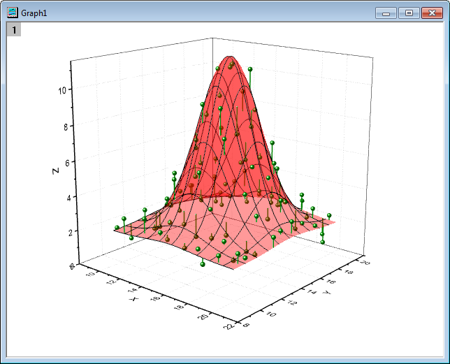
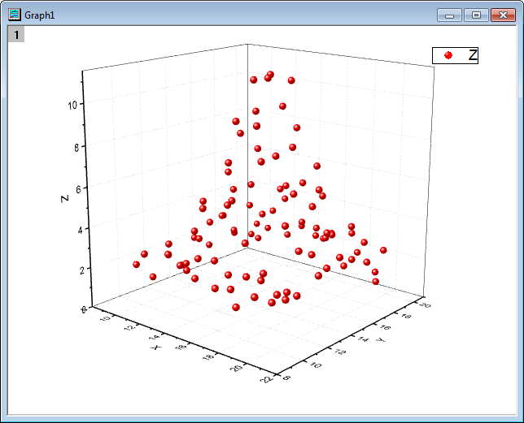
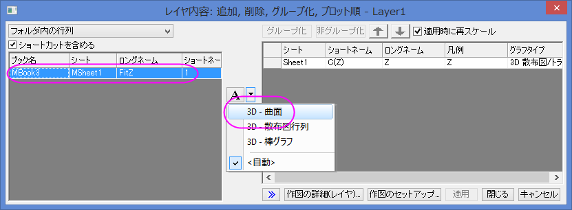
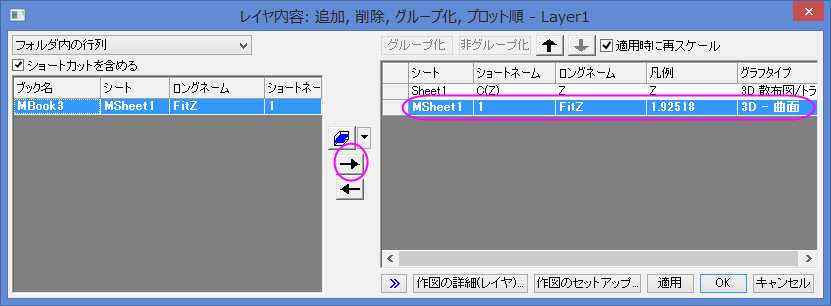
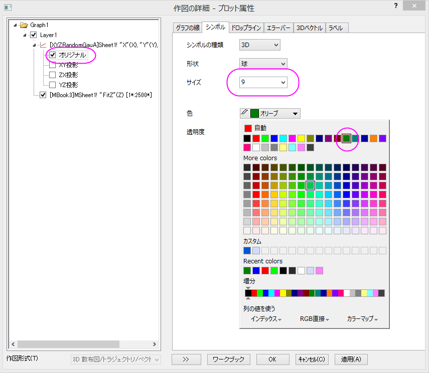
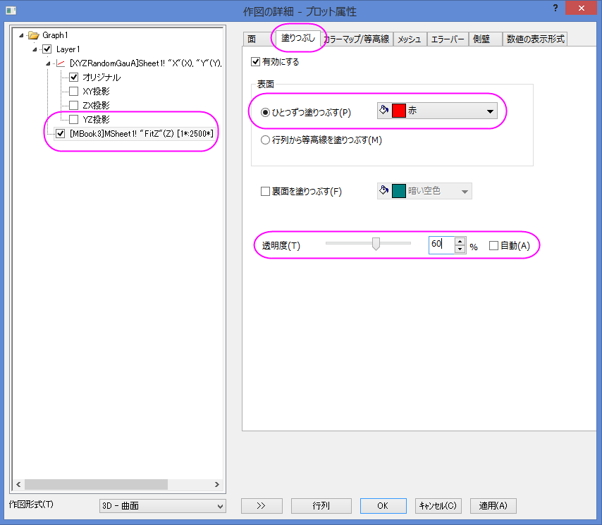
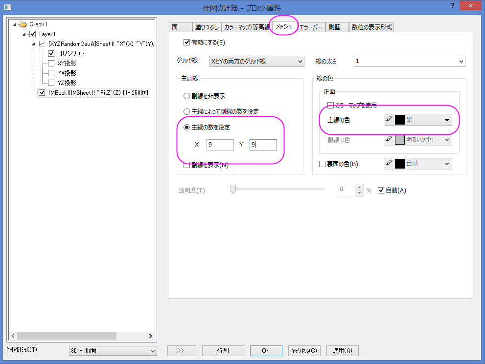
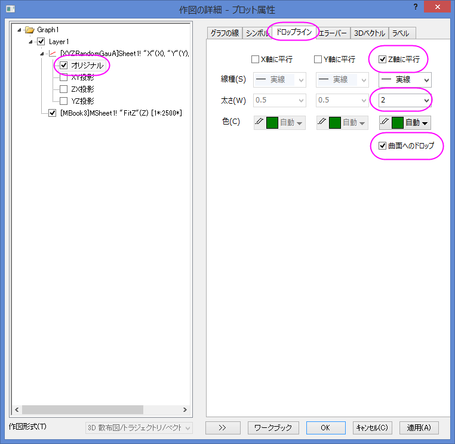
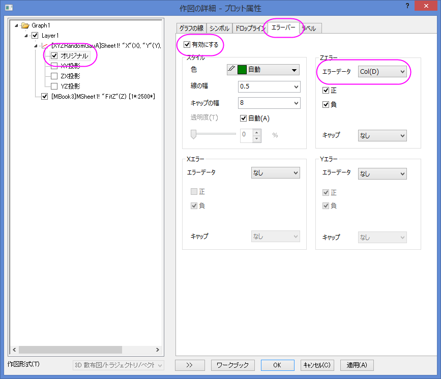

シンボルと垂直線を持つ曲面図
3D-Surface-Symbol-DropLine
サマリー
Originはほとんどのグラフで透過機能をサポートしています。 この機能はプロットが重なったところでも、背後のプロットを見えるようにします。
このチュートリアルでは散布図に曲面フィットを追加し、透過率を設定して曲面の背後にあるデータポイントを可視化し、データポイントに垂直線とエラーバーを追加します。
| 
|
|
| シンボルと垂直線を持つ曲面図 |
シンボルとエラーバーのついた曲面図 |
必要なOriginのバージョン:8.5SR0
学習する項目
- ワークシートのデータから3D散布図を作成し、色塗り曲面図を追加する
- データポイントに垂直線やエラーバーを表示する
- 曲面の透過率を設定する
ステップ
シンボルや垂直線を含んだ曲面図を作成する
このチュートリアルは、チュートリアルデータプロジェクト（<Origin EXE フォルダ>\Samples\TutorialData.opj）と関連しています。
- Tutorial Data.opjを開き、Surface with symbols and droplines
フォルダを開きます。
- XYZRandomGauAワークシートを選択して、アクティブにします。XYZを選択し、メニューから作図：3D：3D散布図と操作して、3D散布図を作成します。
- 
- この3D散布図に3D色塗り曲面図を追加します。 グラフウィンドウの左上にあるレイヤ1 アイコンをダブルクリックし、レイヤ内容ダイアログを開きます。
- レイヤ内容ダイアログで、左上のメニューからフォルダ内の行列を選択します。 左側パネルで、MBook3を選択し、Aの隣にある三角形ボタンをクリックして3D-曲面を選択します。
- 
 をクリックし、右側パネルに追加します。
をクリックし、右側パネルに追加します。- 
- OK をクリックして設定を適用し、レイヤ内容ダイアログを閉じます。グラフをダブルクリックして、作図の詳細ダイアログを開きます。
このダイアログの左のパネルで、全ての項目を開き、オリジナルを選択(または、フォーマットメニューから作図を選択)します。右側パネルのシンボルタブで、サイズを9、色には指定色からオリーブを選択して適用をクリックします。
- 
- 左側パネルで曲面図を選択し、右側パネルで塗りつぶしタブを開きます。ひとつずつ塗りつぶすを赤に設定します。
透明度を60に設定し、適用をクリックします。
- 
- メッシュタブを開き、線の太さを1にし、主線の数の設定をX=9とY=9に設定します。また、主線の色を黒に設定し、適用をクリックします。
- 
- では、垂直線を作図しましょう。左側パネルで、散布図（オリジナル）を再び選択します。右側のパネルで、垂線 タブを選びます。Z軸に平行というチェックボックスを選択して、ドロップラインの太さを2に、Drop
toをSurfaceに設定します。
- 
- OK をクリックしてダイアログボックスを閉じ、凡例を削除します。最終的なグラフは次のようになります。
シンボルとエラーバーのついた曲面図を作成する
- 上記のステップ1から8をもう一度行い、OKを押して散布図付きの3D曲面グラフを作成します。
- ワークシート"XYZRandomGauA"に新しい列を追加します。 列を選択して、右クリックします。 列値の一律設定のメニューから、一様乱数をクリックします。
- 新しく作成したグラフをダブルクリックして、作図の詳細ダイアログを開きます。 左側パネルのノードを開いて、データプロット（オリジナル）を選択します。
エラーバータブを開き、有効にするチェックボックスをクリックします。そして、エラーデータドロップダウンメニューからCol(D)を選択します。
- 
- OK をクリックしてダイアログボックスを閉じ、凡例を削除します。 最終的なグラフは次のようになります。